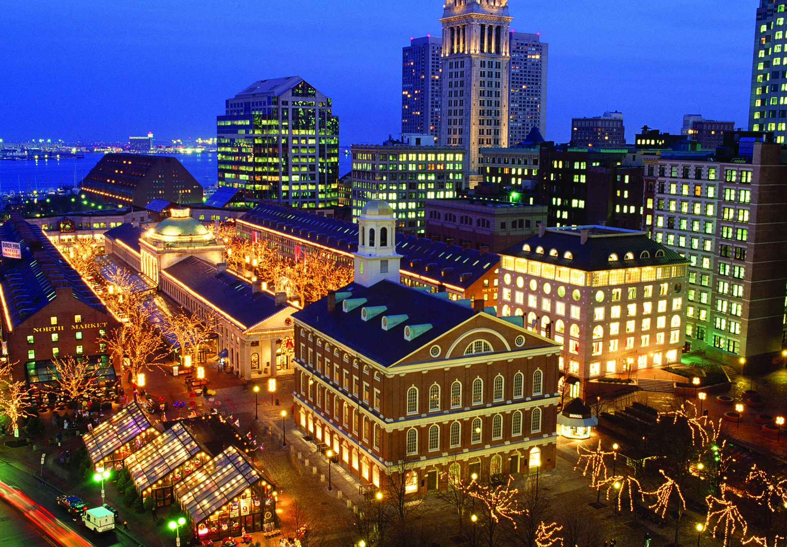
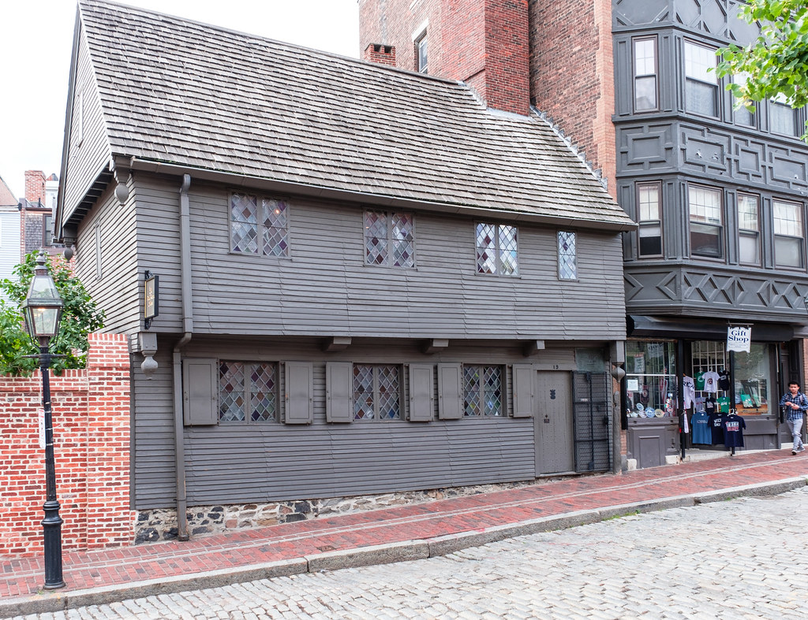
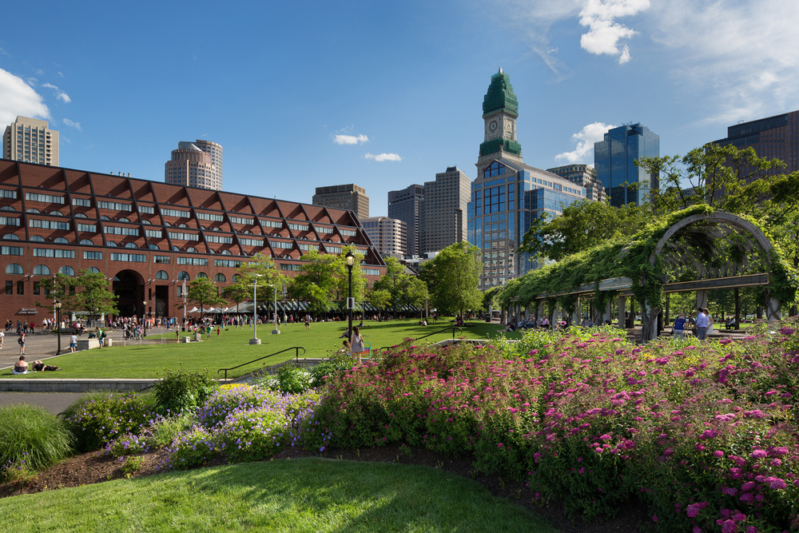

Faniel Hall
Pictured: Faniel Hall during Winter
Boston Chowda always has samples of their famous clam chowder for tastings, while at Wicked Lobsta, you can treat yourself to a fresh lobster roll in a buttery roll. There are always street performers outside the doors of Faneuil Hall and can always count on it being entertaining.
Another notable spot in Faniel Hall is The Boston Chipyard, which pumps out warm, homemade cookies, using only the finest ingrediants!
Paul Revere's Home

For all the history buffs, this house dates to the 1770s and has a museum attached to it. You’ll see the 2.5-mile-long Freedom Trail from here, as well as in other parts of the city, that connects 16 nationally significant historic sites.
This house has been restored to how it would appear when Revere and his family resided in it, and will give visitors an overview of Paul Revere's Ride, as well as the Boston Massacre.
Christopher Columbus Park

The beautiful waterfront park has a flower garden, great restaurants next to it, and is right next to the Aquarium! The seals in the Aquarium are always out-front in the tank, and always a serotonin boost to see them playing in the water.
It is also located directly next to the ferry! If you find yourself wanting to explore the neighboring islands, such as Bumpkin or the historic Grape Island, this is always a fun summer activity! Not to mention, this is also where the boats leave for whale watching!